Supplementary material
Which Alarms Deserve Costly Evidence? A Decision Framework for Automated Triage, from Provenance Benchmarks to Deployment
Università degli Studi dell'Insubria, Varese, Italy
This page completes the appendix of the paper. It gives the queues and starts of every tested group, the category priors, the fitted answer model, a discussion of how realistic the worked example is, sensitivity analyses, the number of attacks needed to rank two criteria, the shared daily budget analysis, and the complete results of the replay. Items numbered with an S (§ S1, Table S1, Figure S1, equation (S1)) belong to this page; every other section, table, figure, equation and reference number refers to the paper. Every value can be regenerated with the code and data of the repository.
S1 Queues, starts and category priors
Table S1 lists, for each tested group and queue, the counts of the source queue behind the start (10) and the alarms of the tested queue, with their realised share of attack windows (§ 4.3).
| Tested group | Queue | Source attack windows | Source alarms (labelled) | Start | Tested alarms | Labelled | Attack windows | Realised share | Distinct attacks |
|---|---|---|---|---|---|---|---|---|---|
| DARPA TC | 1 a day | 0 | 9 | 9.09% | 8 | 8 | 1 | 12.5% | 1 |
| DARPA TC | 3 a day | 0 | 27 | 3.45% | 24 | 24 | 5 | 20.8% | 2 |
| DARPA TC | 10 a day | 2 | 90 | 3.26% | 80 | 80 | 10 | 12.5% | 2 |
| DARPA TC | 30 a day | 7 | 270 | 2.94% | 240 | 240 | 12 | 5.0% | 3 |
| DARPA TC | 100 a day | 13 | 897 | 1.56% | 800 | 800 | 16 | 2.0% | 3 |
| DARPA TC | alert queue | 0 | 7 | 11.11% | 117 | 117 | 9 | 7.7% | 3 |
| OpTC host 051 | 1 a day | 1 | 17 | 10.53% | 3 | 3 | 0 | 0.0% | 0 |
| OpTC host 051 | 3 a day | 5 | 51 | 11.32% | 9 | 9 | 0 | 0.0% | 0 |
| OpTC host 051 | 10 a day | 10 | 170 | 6.40% | 30 | 30 | 2 | 6.7% | 1 |
| OpTC host 051 | 30 a day | 15 | 497 | 3.21% | 90 | 90 | 4 | 4.4% | 1 |
| OpTC host 051 | 100 a day | 25 | 1,562 | 1.66% | 300 | 297 | 4 | 1.3% | 1 |
| OpTC host 051 | alert queue | 9 | 120 | 8.20% | 4 | 4 | 0 | 0.0% | 0 |
| ATLASv2 | 1 a day | 1 | 18 | 10.00% | 2 | 2 | 0 | 0.0% | 0 |
| ATLASv2 | 3 a day | 5 | 54 | 10.71% | 6 | 6 | 0 | 0.0% | 0 |
| ATLASv2 | 10 a day | 12 | 180 | 7.14% | 20 | 20 | 0 | 0.0% | 0 |
| ATLASv2 | 30 a day | 16 | 527 | 3.21% | 60 | 60 | 3 | 5.0% | 2 |
| ATLASv2 | 100 a day | 20 | 1,659 | 1.26% | 200 | 200 | 9 | 4.5% | 2 |
| ATLASv2 | alert queue | 9 | 121 | 8.13% | 3 | 3 | 0 | 0.0% | 0 |
Source attack windows and source alarms: \(a_N\) and \(n_N\), counted in the source queue, built by the same rule on the source collections, so that the start is \(p_N = (a_N + 1)/(n_N + 2)\); for example, 0 attack windows among 9 alarms give \(1/11 = 9.09\) percent, exactly the threshold at \(r = 10\). Tested alarms: alarms of the tested group, with the labelled ones, the attack windows and the distinct attacks among them. Realised share: the fraction of labelled tested alarms that are attack windows, which an exact estimate of the queue’s attack frequency would match.
Consider a window known only by its category of the detector score (§ 4.1). It starts at the prior of its category \(p_k\) (17), estimated like the start of a queue (10), but over all labelled source windows of category \(k\) rather than over the alarms of a queue. For example, in the model tested on OpTC host 051, 9 of the 120 labelled source alerts are attack windows, so \(p_{\texttt{alert}} = 10/122 = 8.2\) percent, the same value as the start of its alert queue (Table S1). Attack windows are far rarer among all windows of the other categories, so their priors are far smaller.
A category with too few source windows takes the prior of another (§ A.5); Table S2 lists every prior.
Figure S1 places every kind of case on the line of starting probabilities at \(r = 10\), where the threshold is 9.1 percent. Each question of each category of the detector score has its zone (§ 3.5), and the zone of a category is the union of the zones of its questions: the starting probabilities from which at least one answer to some question changes the decision. For windows of the high category, which make up most alarms, the zone runs from 2.7 to 13.5 percent in the DARPA TC model, from 2.0 to 15.8 percent in the OpTC model and from 0.94 to 13.8 percent in the ATLASv2 model.
Most category priors lie far below their zone. At its own prior, a window of category unscored or low starts between 0.06 and 0.41 percent, and a window of category high between 0.36 and 0.78 percent. Every one of these starts lies below the zone of its category. By the arithmetic of § 3.3, evidence would have to multiply their odds by 12.6 to 162 to escalate them, and for each of these categories in every model the strongest single answer falls short of the required factor by at least 2.2 times (Table S2). Only the few windows that Velox itself flags start inside the zone: the alerts of OpTC host 051 and ATLASv2 start at 8.2 and 8.1 percent, just under the threshold, where any answer that multiplies the odds by 1.12 or 1.13 escalates them.
Alarm queues start near the threshold. The starts of the queues lie between 1.26 and 11.32 percent (Table S1). For the realistic queues, of 1, 3, 10 and 30 alarms a day and the alert queue, the factor that evidence must supply lies between 0.78 and 3.3; a factor below 1 means that the queue starts above the threshold, so an answer can only change the decision by dividing the odds. For the queue of 100 alarms a day the factor is 5.9 to 7.8.

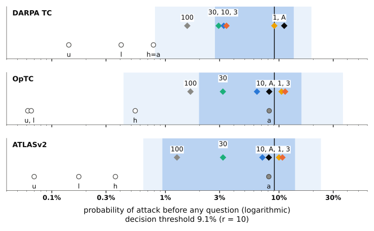

high category. Vertical line: the decision threshold of 9.1 percent. Circles: category priors (u, unscored; l, low; h, high; a, alert), filled when inside their own category’s zone. In DARPA TC, h and a coincide. Diamonds: queue starts (1, 3, 10, 30 and 100 alarms a day; A, alerts); nearby labels are joined. How to read it: a filled circle can cross the threshold after one answer. A queue mixes categories, so a diamond inside the light band does not mean every alarm can cross.Figures S2 and S3 repeat Figure S1 at the other two cost ratios of the realistic region.

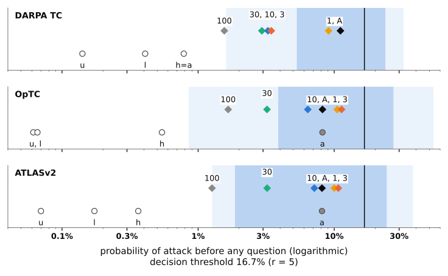


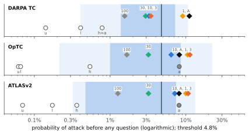

S2 The fitted answer model
Table S2 gives, for each of the three models and each category of the detector score, the prior of the category, the prior and tables the category uses, and the fitted likelihood ratio of every single answer (§ 4.5, § A.5).
Show all 36 rows
| Model (tested group) | Category | Prior | Prior and tables used | Question | Empty | Known | Novel |
|---|---|---|---|---|---|---|---|
| DARPA TC | unscored | 0.14% | own prior, own tables | file | 2.2 | 0.42 | 2.8 |
| network | 0.71 | 1.8 | 12 | ||||
| process | 0.69 | 1.1 | 8.5 | ||||
| low | 0.41% | own prior, own tables | file | 1.4 | 0.61 | 2.1 | |
| network | 0.45 | 2.4 | 11 | ||||
| process | 0.69 | 0.87 | 6.4 | ||||
| high | 0.78% | own prior, own tables | file | 0.75 | 0.8 | 1.6 | |
| network | 0.94 | 0.64 | 1.9 | ||||
| process | 0.93 | 0.78 | 3.6 | ||||
| alert | 0.78% | prior and tables of high | file | 0.75 | 0.8 | 1.6 | |
| network | 0.94 | 0.64 | 1.9 | ||||
| process | 0.93 | 0.78 | 3.6 | ||||
| OpTC host 051 | unscored | 0.06% | own prior, own tables | file | 2.3 | 0.35 | 3.1 |
| network | 0.92 | 0.27 | 5.4 | ||||
| process | 0.76 | 1.5 | 15 | ||||
| low | 0.07% | own prior, own tables | file | 2.2 | 0.46 | 3.3 | |
| network | 0.4 | 0.17 | 23 | ||||
| process | 0.87 | 1 | 13 | ||||
| high | 0.54% | own prior, own tables | file | 0.99 | 0.78 | 1.6 | |
| network | 0.91 | 0.53 | 5 | ||||
| process | 0.93 | 1.1 | 2.7 | ||||
| alert | 8.20% | own prior, pooled tables | file | 1.8 | 0.29 | 4 | |
| network | 0.54 | 0.23 | 16 | ||||
| process | 0.74 | 1.4 | 15 | ||||
| ATLASv2 | unscored | 0.07% | own prior, own tables | file | 1.4 | 0.56 | 1.7 |
| network | 0.73 | 0.43 | 7.7 | ||||
| process | 1.2 | 0.78 | 6.8 | ||||
| low | 0.17% | own prior, own tables | file | 1.5 | 0.61 | 1.9 | |
| network | 0.33 | 0.75 | 16 | ||||
| process | 0.82 | 0.79 | 12 | ||||
| high | 0.36% | own prior, own tables | file | 0.92 | 0.74 | 1.5 | |
| network | 1 | 0.73 | 1.6 | ||||
| process | 0.62 | 0.68 | 11 | ||||
| alert | 8.13% | own prior, pooled tables | file | 1.4 | 0.55 | 2 | |
| network | 0.43 | 0.66 | 12 | ||||
| process | 0.81 | 0.68 | 15 |
The ratios are those of the three questions; alarms of CADETS E3, which lack the process question, use tables fitted on the file and network questions alone, not shown.
Why the tables were not refitted on alarms. The likelihoods \(L_1\) and \(L_0\) of (11) were kept from the tables of each category, for three reasons. First, the attack half cannot be fitted on alarms. The source queues of the realistic queues hold 0 to 16 attack windows each, and none in DARPA TC for the queues of one and three alarms a day and for the alerts, while each table has 27 cells and the model gives a category its own tables only from 20 attack windows (§ A.5); the source windows of category high hold 38 to 53 (Table A1). Only the benign half, where the difference lies, could be refitted on alarms, and a ratio of a refitted half to a half that was not refitted holds for neither set of windows. Second, the tables explain only part of the miscalibration: in the queue of three a day, the questions realised more than the model expected, as a start below the realised share produces (3.45 against 20.8 percent in DARPA TC), not as weaker answers do. Third, a refit adds no attack. The realistic queues would still hold 1 to 6 distinct attacks, against the hundreds to thousands needed to rank the criteria (§ S5), and new tables would be judged on the same few events.
S3 How realistic the example is
The realistic region was fixed from published figures alone (§ 4.8), and each of its axes rests on evidence of a different strength.
Alarm volume. The only published figure per monitored host is that of Dong et al. [45]: practitioners accept 0.001 to 0.1 alarms per host per day. Every queue of this study exceeds it, by a factor of at least 5 (one alarm a day on ATLASv2, whose two hosts share a queue). The queues, however, are inputs to automated triage. Their sizes follow manual review capacity only as a workload reference, and nothing in the replay requires an analyst to review every incoming alarm. The escalations set the later investigation workload, and the loss counts benign escalations as wasted analyst effort; downstream staffing and queueing delays lie outside the replay. Measured volumes per SOC range from hundreds of high priority alerts a day [20] to more than ten thousand alerts a day left to analysts after automatic blocking [46].
Minutes per alarm. The range of 10 to 40 minutes rests on one measurement in a user study [20], one estimate by experienced analysts [47] and one industry figure quoted by three papers. It values the human effort wasted on a false escalation; automated evidence actions are charged separately.
Cost ratio. No study measures it. The region of 5 to 20 follows the only value used for alert triage [59], and the full sweep shows how the results move outside it; at 50 and 100, the short queues lose every admissible question.
Prices. The region comes from automated actions, LLM agents and sandboxes (Table 2). A question that costs a full investigation by a second analyst, a price near one false escalation, lies outside it; at that price no question is admissible on any queue.
S4 Sensitivity of the results
Order of visiting. Visiting the alarms of a day in order of their expected decision value, instead of their score, changes the outcomes only in the queue of 100 alarms a day, in 420 of the 112,896 replayed combinations of collection, queue, cost ratio, price, budget and criterion.
Smoothing strength. Stronger smoothing of the model (\(\tau = 10^5\) and \(10^6\)) leaves fewer admissible questions, 24 and 7 instead of 90 in the queue of ten a day, and losses close to those of asking nothing. Weaker smoothing (\(\tau = 10^2\) and \(10^3\)) leaves most results in place, but not all; the next paragraph reports how the value of a question moves.
Value per question under other starts and smoothing. Table S3 repeats the values at \(r = 10\) and \(c = 0.01\) under the two other estimates of the starts of § A.2 and under weaker smoothing. With half a window added to each class, the starts fall, and the DARPA TC queue of one alarm a day and the DARPA TC alert queue start below the threshold. The value in the queue of three a day falls from 1.3 to 0.4, the value in the queue of ten a day turns negative (−0.14), and the value of the alerts rises (0.28 under expected decision value). With starts from the source test splits only, the starts rise, and the values of the queues of three and ten a day become 0.84 and 0.46. With weaker smoothing most values stay close, but the queue of thirty a day turns positive (0.048, with 270 questions instead of 150), and information gain among the alerts rises from 0.016 to 0.58. Over the realistic region, the sign of the value changes in 35 of 198 combinations with half a window per class, in 46 of 174 with starts from the test splits only, and in 41 and 38 of 198 with \(\tau = 10^2\) and \(10^3\), mostly where the value lies close to zero.
| Queue | Criterion | Default | Half a window per class | Source test splits only | \(\tau = 10^2\) | \(\tau = 10^3\) |
|---|---|---|---|---|---|---|
| 1 a day | EDV | 0.31 (13) | 0.89 (9) | 0.33 (3) | 0.31 (13) | 0.31 (13) |
| IG | 0.62 (13) | 1 (9) | 0.33 (3) | 0.69 (13) | 0.69 (13) | |
| random | 0.55 (13) | 0.92 (9) | 0.33 (3) | 0.6 (13) | 0.6 (13) | |
| 3 a day | EDV | 1.3 (27) | 0.4 (15) | 0.84 (31) | 1.3 (27) | 1.3 (27) |
| IG | 1.4 (27) | 0.47 (15) | 0.84 (31) | 1.4 (27) | 1.4 (27) | |
| random | 1.3 (27) | 0.32 (15) | 0.84 (31) | 1.3 (27) | 1.3 (27) | |
| 10 a day | EDV | 0.26 (90) | -0.14 (50) | 0.46 (130) | 0.26 (90) | 0.26 (90) |
| IG | 0.26 (90) | -0.14 (50) | 0.47 (130) | 0.26 (90) | 0.26 (90) | |
| random | 0.19 (90) | -0.24 (50) | 0.4 (130) | 0.19 (90) | 0.19 (90) | |
| 30 a day | EDV | -0.11 (150) | -0.11 (150) | 0.048 (270) | 0.048 (270) | 0.048 (270) |
| IG | -0.11 (150) | -0.11 (150) | 0.048 (270) | 0.048 (270) | 0.048 (270) | |
| random | -0.11 (150) | -0.11 (150) | 0.05 (270) | 0.051 (270) | 0.051 (270) | |
| alert queue | EDV | 0.0081 (124) | 0.28 (124) | 0.0081 (124) | 0 (124) | 0 (124) |
| IG | 0.016 (124) | 0.44 (124) | 0.016 (124) | 0.58 (124) | 0.58 (124) | |
| random | 0.19 (124) | 0.11 (124) | 0.19 (124) | 0.36 (124) | 0.36 (124) | |
| Sign differs from default | 198 cells with questions | 35 of 198 | 46 of 174 | 41 of 198 | 38 of 198 | |
| Only one of the two asks | 3 | 33 | 12 | 6 |
Default: one window added to each class (§ 4.3). Half a window per class: \(p_N = (a_N + 0.5)/(n_N + 1)\). Source test splits only: source queues built without validation days. \(\tau = 10^2\) and \(10^3\): weaker smoothing (§ 4.5). Last two rows: over the realistic combinations of queue, cost ratio, price and criterion, how often the sign of the value differs from the default where both ask questions, and how often only one of the two asks.
Table S4 gives the start of every tested queue under the three estimates of the starts.
| Tested group | Queue | Start (default) | Half a window per class | Source test splits only |
|---|---|---|---|---|
| DARPA TC | 1 a day | 9.09% | 5.00% | 14.29% |
| DARPA TC | 3 a day | 3.45% | 1.79% | 5.88% |
| DARPA TC | 10 a day | 3.26% | 2.75% | 5.77% |
| DARPA TC | 30 a day | 2.94% | 2.77% | 5.26% |
| DARPA TC | 100 a day | 1.56% | 1.50% | 2.81% |
| DARPA TC | alert queue | 11.11% | 6.25% | 11.11% |
| OpTC host 051 | 1 a day | 10.53% | 8.33% | 16.67% |
| OpTC host 051 | 3 a day | 11.32% | 10.58% | 18.75% |
| OpTC host 051 | 10 a day | 6.40% | 6.14% | 10.78% |
| OpTC host 051 | 30 a day | 3.21% | 3.11% | 5.30% |
| OpTC host 051 | 100 a day | 1.66% | 1.63% | 2.59% |
| OpTC host 051 | alert queue | 8.20% | 7.85% | 8.20% |
| ATLASv2 | 1 a day | 10.00% | 7.89% | 15.38% |
| ATLASv2 | 3 a day | 10.71% | 10.00% | 17.14% |
| ATLASv2 | 10 a day | 7.14% | 6.91% | 11.61% |
| ATLASv2 | 30 a day | 3.21% | 3.12% | 5.12% |
| ATLASv2 | 100 a day | 1.26% | 1.23% | 1.91% |
| ATLASv2 | alert queue | 8.13% | 7.79% | 8.13% |
One window added to each class (the default), half a window added to each class, and one window added to each class with the source queues built on the test splits of the source collections only.
The alert queue without ClearScope E3. ClearScope E3 contributes 102 of the 124 alerts, with 2 attack windows. Without it, the alert queue holds 22 labelled alerts and 7 attack windows, and the decision loss at \(r = 10\) and \(c = 0.01\) is 8 without questions, 9 under expected decision value, 8 under information gain, 7.5 under random choice and 8 with all questions. The large differences among the alerts, such as 107 under expected decision value against 84.5 under random choice and 28 with all questions, therefore come from ClearScope E3. Its weight has a likely cause: 34 percent of its test windows are high, against 3 to 19 percent in the other collections, and its validation split lies within the first 24 hours of its records, so the maximum validation score that defines an alert may come from an unusually quiet period.
S5 How many attacks tell two criteria apart
This section derives the numbers of Table S5. Take two criteria \(\pi\) and \(\pi'\). For each alarm \(i\) of a queue, the recorded answers fix their decisions \(d_{\pi,i}\) and \(d_{\pi',i}\) (1 to escalate, 0 to dismiss; for random choice, the share of seeds that escalate). A label \(Y_i\) is drawn with probability \(p_i\), the model’s probability of attack after all the alarm’s answers. Holding the answers fixed understates the variability that new data would show. The loss of a decision \(d\) on the alarm is \(d + Y_i\,(r - (1+r)\,d)\): 1 for a false escalation, \(r\) for a missed attack window and 0 otherwise. The difference in loss between the two criteria therefore has mean and variance
For an alarm drawn at random from the queue, the difference has mean \(\mu\), the average of the \(\mu_i\), and variance \(\sigma^2\), the average of the \(\sigma_i^2\) plus the variance of the \(\mu_i\). Let \(z_q\) denote the quantile at probability \(q\) of the standard normal distribution. A two sided test at the 5 percent level detects the difference with probability 0.8 after
alarms: the smaller the average difference relative to its spread, the more alarms are needed. Alarms convert into attack windows through the average of the \(p_i\), and attack windows into distinct attacks through the number of attack windows per annotated attack in the same queue. For example, if two criteria differ by \(\mu = 0.1\) per alarm with \(\sigma = 1.5\), then \(n = (2.8 \times 15)^2 \approx 1{,}770\) alarms; with an average \(p_i\) of 5 percent these hold about 88 attack windows, and at 10 attack windows per attack about 9 distinct attacks. A closed form of this kind was checked against direct simulation of the labels.
| Queue | Distinct attacks in the queue | EDV vs random | IG vs random | EDV vs IG | EDV vs no question |
|---|---|---|---|---|---|
| 1 a day | 1 | 1,200 (54) | 2,400 (54) | 5,400 (30) | 88 (72) |
| 3 a day | 2 | 230 (72) | 550 (72) | 230 (30) | 87 (72) |
| 10 a day | 3 | 660 (66) | 1,900 (66) | 1,100 (24) | 21 (78) |
| 30 a day | 6 | 9,600 (52) | 9,600 (52) | never (0) | 32 (72) |
| alert queue | 3 | 490 (72) | 490 (72) | 490 (48) | 9.6 (78) |
The median over the realistic cells in which the two criteria take different decisions, rounded to two significant figures, with the number of those cells out of 90 in brackets; never: identical decisions in all 90 cells. Second column: the distinct attacks the queue actually holds.
S6 Complete results of the replay
The tables and figures below extend the analyses of § 5. The shared daily budget is examined in full in § S6.3. Unless stated otherwise, they sum over the three tested groups.
S6.1 When a question is worth asking
Figure S4 extends Table 3 of § 5.1 to every cost ratio.

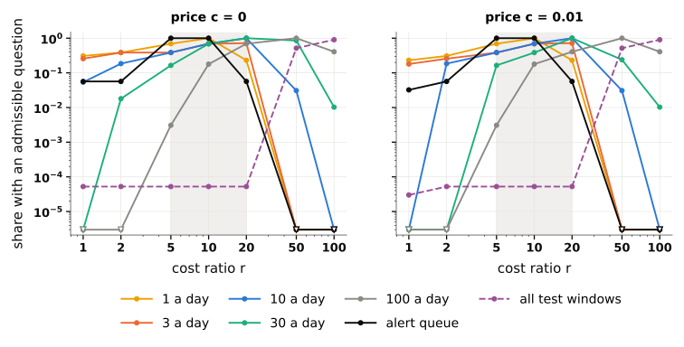

S6.2 Where the criteria can differ
Table S6 lists every block of alarms of the realistic queues (§ 5.2).
| Tested group | Queue | Categories | Tables | Questions available | Alarms | EDV asks | IG asks | Decisions differing |
|---|---|---|---|---|---|---|---|---|
| DARPA TC | 1 a day | alert, high | high | file, network | 4 | file | file | 0 |
| DARPA TC | 1 a day | alert, high | high | file, network, process | 4 | file | process | 3 |
| DARPA TC | 3 a day | alert, high | high | file, network, process | 12 | process | process | 0 |
| DARPA TC | 10 a day | alert, high | high | file, network, process | 40 | process | process | 0 |
| DARPA TC | alert queue | alert | high | file, network | 4 | file | file | 0 |
| DARPA TC | alert queue | alert | high | file, network, process | 113 | process | process | 0 |
| OpTC host 051 | 1 a day | alert | pooled | file, network, process | 2 | file | network | 1 |
| OpTC host 051 | 1 a day | high | high | file, network, process | 1 | network | network | 0 |
| OpTC host 051 | 3 a day | alert | pooled | file, network, process | 4 | file | network | 1 |
| OpTC host 051 | 3 a day | high | high | file, network, process | 5 | network | network | 0 |
| OpTC host 051 | 10 a day | alert | pooled | file, network, process | 4 | network | network | 0 |
| OpTC host 051 | 10 a day | high | high | file, network, process | 26 | network | network | 0 |
| OpTC host 051 | 30 a day | alert | pooled | file, network, process | 4 | network | network | 0 |
| OpTC host 051 | 30 a day | high | high | file, network, process | 86 | network | network | 0 |
| OpTC host 051 | alert queue | alert | pooled | file, network, process | 4 | file | network | 1 |
| ATLASv2 | 1 a day | alert | pooled | file, network, process | 1 | network | network | 0 |
| ATLASv2 | 1 a day | high | high | file, network, process | 1 | process | process | 0 |
| ATLASv2 | 3 a day | alert | pooled | file, network, process | 3 | network | network | 0 |
| ATLASv2 | 3 a day | high | high | file, network, process | 3 | process | process | 0 |
| ATLASv2 | 10 a day | alert | pooled | file, network, process | 3 | network | network | 0 |
| ATLASv2 | 10 a day | high | high | file, network, process | 17 | process | process | 0 |
| ATLASv2 | 30 a day | alert | pooled | file, network, process | 3 | network | network | 0 |
| ATLASv2 | 30 a day | high | high | file, network, process | 57 | process | process | 0 |
| ATLASv2 | alert queue | alert | pooled | file, network, process | 3 | network | network | 0 |
Alarms of one tested group and one queue that share the tables and the questions available. Categories: the Velox categories of the alarms of the block. Tables: the category whose tables the model uses; pooled: tables pooled over all categories. Alarms: alarms with an admissible question. EDV asks, IG asks: the question each criterion asks of every alarm of the block. Decisions differing: alarms on which the two criteria take different decisions.
S6.3 How many questions a day
This section asks how many questions the daily budget should allow, and what a larger budget changes in attack windows caught and in false escalations.
Part of the answer is known before any question is asked. With one question per alarm, a budget larger than the day’s number of alarms with an admissible question changes nothing on that day. At \(r = 10\) and \(c = 0.01\), this number is at most 1 per collection and day in the queue of one a day, 3 in the queue of three a day and 10 in the queue of ten a day. In the queue of thirty a day it is 30 on 5 of the 13 collection days and 0 on the others. Among the alerts it reaches 84, with a median of 4 over the 7 collection days with alerts. A budget of 3 questions a day thus already covers the queue of three a day, and a budget of 10 the queue of ten a day.
What the questions achieve within that bound needs the labels. Figure S5 follows the queues of 3, 10 and 30 alarms a day and the alert queue at \(r = 10\) and a price of 0.01; Table S8 gives every value. Two patterns stand out.
With a small budget, the criteria end close to one another. With one question a day, at most one alarm per collection and day is questioned: 9 alarms in the queues of three and ten a day, 5 in the queue of thirty a day and 7 among the alerts. In the queue of three a day, that single daily question catches 1 of the 5 attack windows, all of which asking nothing misses, and the decision loss falls from 65 to between 52 and 54 under every criterion. In the queue of ten a day, the 9 questions catch 1 attack window and the loss falls from 120 to about 111: a saving of about 1.0 per question, four times the value per question without a budget limit. In the queue of thirty a day and among the alerts, the single daily question changes the loss by at most two units.
With a large budget, the queue and the price decide. Without a budget limit, in the queue of ten a day, expected decision value and information gain catch 5 of the 12 attack windows at the cost of 27 false escalations, and random choice catches 4.6 with 28.5; asking nothing catches none and escalates nothing. The decision loss is 97 for both criteria based on the model and 102.5 for random choice, against 120 without questions. In the queue of thirty a day, 150 questions catch 3 of the 19 attack windows with 46 to 48 false escalations: a loss of 206 to 208, against 190 without questions. Among the alerts, asking nothing already escalates all 9 attack windows. Expected decision value and information gain keep them all and escalate 107 and 106 benign alerts, against 108 without questions; random choice escalates only 73.5 benign alerts but loses 1.1 attack windows.

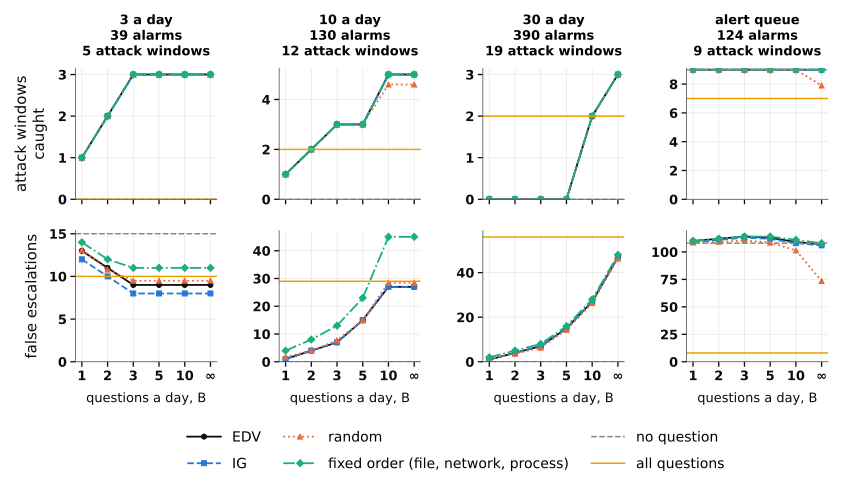

How many questions an alarm may receive. The daily budget is one design choice; the number of questions an alarm may receive is another, and it matters more. The largest change in this study comes not from the criterion but from the rule of one question per alarm. Under a sequential rule, an alarm receives a further question as long as some unasked question is still admissible at its updated probability, with no budget limit. At \(r = 10\) and \(c = 0.01\), the alert queue then catches 7 of its 9 attack windows with only 8 false escalations. Its decision loss falls to 28, the loss of asking all three questions of every alarm, from 107 with one question chosen by expected decision value and 108 without questions. In the queue of ten a day the same rule raises the loss from 97 to 128, above the 120 of asking nothing, and in the queue of three a day from 29 to 60. Under the sequential rule every criterion reaches nearly the same loss, within 2 in every realistic queue, so the choice of the first question matters even less. Further questions help where a later answer can overturn a misleading earlier one, and hurt where each further answer adds a chance of a false escalation. A rule that plans several questions ahead, rather than one at a time, is not studied here; § S4 reports two further checks, on the order in which alarms are visited and on the smoothing strength.
Table S7 gives the range of every criterion over the realistic cells, and Table S9 the decision loss of every criterion, including all six fixed orders.
| Queue | Criterion | Attack windows caught | False escalations | Questions asked | Decisions different from EDV |
|---|---|---|---|---|---|
| 1 a day | EDV | 0 to 1 | 0 to 12 | 0 to 13 | 0 |
| IG | 0 to 1 | 0 to 12 | 0 to 13 | 0 to 4 | |
| random | 0 to 1 | 0 to 12 | 0 to 13 | 0 to 4.7 | |
| fixed order (file, network, process) | 0 to 1 | 0 to 12 | 0 to 13 | 0 to 1 | |
| no question | 0 to 1 | 0 to 12 | 0 | 0 to 4 | |
| all questions | 1 | 3 to 8 | 35 | 2 to 5 | |
| 3 a day | EDV | 0 to 5 | 0 to 17 | 0 to 28 | 0 |
| IG | 0 to 5 | 0 to 17 | 0 to 28 | 0 to 1 | |
| random | 0 to 5 | 0 to 21.1 | 0 to 28 | 0 to 7.5 | |
| fixed order (file, network, process) | 0 to 5 | 0 to 26 | 0 to 28 | 0 to 9 | |
| no question | 0 | 0 to 15 | 0 | 0 to 9 | |
| all questions | 0 to 5 | 9 to 17 | 105 | 1 to 15 | |
| 10 a day | EDV | 0 to 7 | 0 to 51 | 0 to 130 | 0 |
| IG | 0 to 11 | 0 to 48 | 0 to 130 | 0 to 18 | |
| random | 0 to 8.9 | 0 to 55.6 | 0 to 130 | 0 to 20.3 | |
| fixed order (file, network, process) | 0 to 12 | 0 to 76 | 0 to 130 | 0 to 51 | |
| no question | 0 to 2 | 0 to 48 | 0 | 0 to 32 | |
| all questions | 2 to 11 | 26 to 45 | 350 | 2 to 36 | |
| 30 a day | EDV | 0 to 9 | 0 to 59 | 0 to 390 | 0 |
| IG | 0 to 9 | 0 to 59 | 0 to 390 | 0 | |
| random | 0 to 10.8 | 0 to 71.3 | 0 to 390 | 0 to 37.3 | |
| fixed order (file, network, process) | 0 to 12 | 0 to 103 | 0 to 390 | 0 to 75 | |
| no question | 0 | 0 | 0 | 0 to 68 | |
| all questions | 2 to 9 | 41 to 68 | 1,050 | 22 to 72 | |
| alert queue | EDV | 0 to 9 | 0 to 115 | 0 to 124 | 0 |
| IG | 0 to 9 | 0 to 115 | 0 to 124 | 0 to 1 | |
| random | 0 to 9 | 0 to 115 | 0 to 124 | 0 to 37.2 | |
| fixed order (file, network, process) | 0 to 9 | 0 to 115 | 0 to 124 | 0 to 7 | |
| no question | 0 to 9 | 0 to 115 | 0 | 0 to 13 | |
| all questions | 6 to 7 | 6 to 14 | 368 | 3 to 108 |
Ranges, over the queues of 1, 3, 10 and 30 alarms a day and the alert queue, \(r\) in {5, 10, 20}, \(c\) in {0.001, 0.01, 0.03, 0.1, 0.3} and every budget, of sums over the three tested groups. Labelled alarms (attack windows): 1 a day 13 (1), 3 a day 39 (5), 10 a day 130 (12), 30 a day 390 (19), alert queue 124 (9). Fixed order: file, then network, then process. Last column: alarms on which the criterion’s decision differs from that of expected decision value. Each range joins the extremes of different cells, so a row does not describe one trade between caught attacks and false escalations; Table S8 gives every value at \(r = 10\) and \(c = 0.01\).
Show all 136 rows
| Queue | B | Criterion | Attack windows caught | False escalations | Questions | Loss D |
|---|---|---|---|---|---|---|
| 1 a day | 1 to ∞ | EDV | 1 | 8 | 13 | 8 |
| 1 a day | 1 to ∞ | IG | 1 | 4 | 13 | 4 |
| 1 a day | 1 to ∞ | random | 1 | 4.9 | 13 | 4.9 |
| 1 a day | 1 to ∞ | fixed order (file, network, process) | 1 | 9 | 13 | 9 |
| 1 a day | any | no question | 1 | 12 | 0 | 12 |
| 1 a day | any | all questions | 1 | 6 | 35 | 6 |
| 3 a day | 1 | EDV | 1 | 13 | 9 | 53 |
| 3 a day | 1 | IG | 1 | 12 | 9 | 52 |
| 3 a day | 1 | random | 1 | 13.1 | 9 | 53.1 |
| 3 a day | 1 | fixed order (file, network, process) | 1 | 14 | 9 | 54 |
| 3 a day | 2 | EDV | 2 | 11 | 18 | 41 |
| 3 a day | 2 | IG | 2 | 10 | 18 | 40 |
| 3 a day | 2 | random | 2 | 10.8 | 18 | 40.8 |
| 3 a day | 2 | fixed order (file, network, process) | 2 | 12 | 18 | 42 |
| 3 a day | 3 | EDV | 3 | 9 | 27 | 29 |
| 3 a day | 3 | IG | 3 | 8 | 27 | 28 |
| 3 a day | 3 | random | 3 | 9.5 | 27 | 29.5 |
| 3 a day | 3 | fixed order (file, network, process) | 3 | 11 | 27 | 31 |
| 3 a day | 5 | EDV | 3 | 9 | 27 | 29 |
| 3 a day | 5 | IG | 3 | 8 | 27 | 28 |
| 3 a day | 5 | random | 3 | 9.5 | 27 | 29.5 |
| 3 a day | 5 | fixed order (file, network, process) | 3 | 11 | 27 | 31 |
| 3 a day | 10 | EDV | 3 | 9 | 27 | 29 |
| 3 a day | 10 | IG | 3 | 8 | 27 | 28 |
| 3 a day | 10 | random | 3 | 9.5 | 27 | 29.5 |
| 3 a day | 10 | fixed order (file, network, process) | 3 | 11 | 27 | 31 |
| 3 a day | ∞ | EDV | 3 | 9 | 27 | 29 |
| 3 a day | ∞ | IG | 3 | 8 | 27 | 28 |
| 3 a day | ∞ | random | 3 | 9.5 | 27 | 29.5 |
| 3 a day | ∞ | fixed order (file, network, process) | 3 | 11 | 27 | 31 |
| 3 a day | any | no question | 0 | 15 | 0 | 65 |
| 3 a day | any | all questions | 0 | 10 | 105 | 60 |
| 10 a day | 1 | EDV | 1 | 1 | 9 | 111 |
| 10 a day | 1 | IG | 1 | 1 | 9 | 111 |
| 10 a day | 1 | random | 1 | 1.7 | 9 | 111.7 |
| 10 a day | 1 | fixed order (file, network, process) | 1 | 4 | 9 | 114 |
| 10 a day | 2 | EDV | 2 | 4 | 18 | 104 |
| 10 a day | 2 | IG | 2 | 4 | 18 | 104 |
| 10 a day | 2 | random | 2 | 4 | 18 | 104 |
| 10 a day | 2 | fixed order (file, network, process) | 2 | 8 | 18 | 108 |
| 10 a day | 3 | EDV | 3 | 7 | 27 | 97 |
| 10 a day | 3 | IG | 3 | 7 | 27 | 97 |
| 10 a day | 3 | random | 3 | 7.7 | 27 | 97.7 |
| 10 a day | 3 | fixed order (file, network, process) | 3 | 13 | 27 | 103 |
| 10 a day | 5 | EDV | 3 | 15 | 45 | 105 |
| 10 a day | 5 | IG | 3 | 15 | 45 | 105 |
| 10 a day | 5 | random | 3 | 14.9 | 45 | 104.9 |
| 10 a day | 5 | fixed order (file, network, process) | 3 | 23 | 45 | 113 |
| 10 a day | 10 | EDV | 5 | 27 | 90 | 97 |
| 10 a day | 10 | IG | 5 | 27 | 90 | 97 |
| 10 a day | 10 | random | 4.6 | 28.5 | 90 | 102.5 |
| 10 a day | 10 | fixed order (file, network, process) | 5 | 45 | 90 | 115 |
| 10 a day | ∞ | EDV | 5 | 27 | 90 | 97 |
| 10 a day | ∞ | IG | 5 | 27 | 90 | 97 |
| 10 a day | ∞ | random | 4.6 | 28.5 | 90 | 102.5 |
| 10 a day | ∞ | fixed order (file, network, process) | 5 | 45 | 90 | 115 |
| 10 a day | any | no question | 0 | 0 | 0 | 120 |
| 10 a day | any | all questions | 2 | 29 | 350 | 129 |
| 30 a day | 1 | EDV | 0 | 1 | 5 | 191 |
| 30 a day | 1 | IG | 0 | 1 | 5 | 191 |
| 30 a day | 1 | random | 0 | 1.3 | 5 | 191.3 |
| 30 a day | 1 | fixed order (file, network, process) | 0 | 2 | 5 | 192 |
| 30 a day | 2 | EDV | 0 | 4 | 10 | 194 |
| 30 a day | 2 | IG | 0 | 4 | 10 | 194 |
| 30 a day | 2 | random | 0 | 3.6 | 10 | 193.6 |
| 30 a day | 2 | fixed order (file, network, process) | 0 | 5 | 10 | 195 |
| 30 a day | 3 | EDV | 0 | 7 | 15 | 197 |
| 30 a day | 3 | IG | 0 | 7 | 15 | 197 |
| 30 a day | 3 | random | 0 | 6.3 | 15 | 196.3 |
| 30 a day | 3 | fixed order (file, network, process) | 0 | 8 | 15 | 198 |
| 30 a day | 5 | EDV | 0 | 15 | 25 | 205 |
| 30 a day | 5 | IG | 0 | 15 | 25 | 205 |
| 30 a day | 5 | random | 0 | 14.3 | 25 | 204.3 |
| 30 a day | 5 | fixed order (file, network, process) | 0 | 16 | 25 | 206 |
| 30 a day | 10 | EDV | 2 | 27 | 50 | 197 |
| 30 a day | 10 | IG | 2 | 27 | 50 | 197 |
| 30 a day | 10 | random | 2 | 26.3 | 50 | 196.3 |
| 30 a day | 10 | fixed order (file, network, process) | 2 | 28 | 50 | 198 |
| 30 a day | ∞ | EDV | 3 | 47 | 150 | 207 |
| 30 a day | ∞ | IG | 3 | 47 | 150 | 207 |
| 30 a day | ∞ | random | 3 | 46.3 | 150 | 206.3 |
| 30 a day | ∞ | fixed order (file, network, process) | 3 | 48 | 150 | 208 |
| 30 a day | any | no question | 0 | 0 | 0 | 190 |
| 30 a day | any | all questions | 2 | 56 | 1,050 | 226 |
| 100 a day | 1 | EDV | 0 | 1 | 5 | 291 |
| 100 a day | 1 | IG | 0 | 1 | 5 | 291 |
| 100 a day | 1 | random | 0 | 1 | 5 | 291 |
| 100 a day | 1 | fixed order (file, network, process) | 0 | 1 | 5 | 291 |
| 100 a day | 2 | EDV | 0 | 3 | 9 | 293 |
| 100 a day | 2 | IG | 0 | 3 | 9 | 293 |
| 100 a day | 2 | random | 0 | 2.3 | 9 | 292.3 |
| 100 a day | 2 | fixed order (file, network, process) | 0 | 3 | 9 | 293 |
| 100 a day | 3 | EDV | 0 | 5 | 13 | 295 |
| 100 a day | 3 | IG | 0 | 5 | 13 | 295 |
| 100 a day | 3 | random | 0 | 4 | 13 | 294 |
| 100 a day | 3 | fixed order (file, network, process) | 0 | 5 | 13 | 295 |
| 100 a day | 5 | EDV | 0 | 7 | 19 | 297 |
| 100 a day | 5 | IG | 0 | 7 | 19 | 297 |
| 100 a day | 5 | random | 0 | 6 | 19 | 296 |
| 100 a day | 5 | fixed order (file, network, process) | 0 | 7 | 19 | 297 |
| 100 a day | 10 | EDV | 0 | 10 | 34 | 300 |
| 100 a day | 10 | IG | 0 | 10 | 34 | 300 |
| 100 a day | 10 | random | 0 | 9 | 34 | 299 |
| 100 a day | 10 | fixed order (file, network, process) | 0 | 10 | 34 | 300 |
| 100 a day | ∞ | EDV | 2 | 31 | 232 | 301 |
| 100 a day | ∞ | IG | 2 | 31 | 232 | 301 |
| 100 a day | ∞ | random | 2 | 30 | 232 | 300 |
| 100 a day | ∞ | fixed order (file, network, process) | 2 | 31 | 232 | 301 |
| 100 a day | any | no question | 0 | 0 | 0 | 290 |
| 100 a day | any | all questions | 2 | 72 | 3,491 | 342 |
| alert queue | 1 | EDV | 9 | 110 | 7 | 110 |
| alert queue | 1 | IG | 9 | 109 | 7 | 109 |
| alert queue | 1 | random | 9 | 108.6 | 7 | 108.6 |
| alert queue | 1 | fixed order (file, network, process) | 9 | 110 | 7 | 110 |
| alert queue | 2 | EDV | 9 | 112 | 13 | 112 |
| alert queue | 2 | IG | 9 | 111 | 13 | 111 |
| alert queue | 2 | random | 9 | 109.2 | 13 | 109.2 |
| alert queue | 2 | fixed order (file, network, process) | 9 | 112 | 13 | 112 |
| alert queue | 3 | EDV | 9 | 114 | 19 | 114 |
| alert queue | 3 | IG | 9 | 113 | 19 | 113 |
| alert queue | 3 | random | 9 | 110.4 | 19 | 110.4 |
| alert queue | 3 | fixed order (file, network, process) | 9 | 114 | 19 | 114 |
| alert queue | 5 | EDV | 9 | 113 | 26 | 113 |
| alert queue | 5 | IG | 9 | 112 | 26 | 112 |
| alert queue | 5 | random | 9 | 108.5 | 26 | 108.5 |
| alert queue | 5 | fixed order (file, network, process) | 9 | 114 | 26 | 114 |
| alert queue | 10 | EDV | 9 | 109 | 41 | 109 |
| alert queue | 10 | IG | 9 | 108 | 41 | 108 |
| alert queue | 10 | random | 9 | 101.4 | 41 | 101.4 |
| alert queue | 10 | fixed order (file, network, process) | 9 | 111 | 41 | 111 |
| alert queue | ∞ | EDV | 9 | 107 | 124 | 107 |
| alert queue | ∞ | IG | 9 | 106 | 124 | 106 |
| alert queue | ∞ | random | 7.9 | 73.5 | 124 | 84.5 |
| alert queue | ∞ | fixed order (file, network, process) | 9 | 108 | 124 | 108 |
| alert queue | any | no question | 9 | 108 | 0 | 108 |
| alert queue | any | all questions | 7 | 8 | 368 | 28 |
Loss \(D = 10M + F\). Values with one decimal are means over the ten seeds of random choice. The queue of 1 alarm a day holds one alarm per collection and day, so no budget binds there and its rows are given once. Fixed order: file, then network, then process.
| Queue | Questions | No question | EDV | IG | Random | file, network, process | file, process, network | network, file, process | network, process, file | process, file, network | process, network, file | All questions |
|---|---|---|---|---|---|---|---|---|---|---|---|---|
| 1 a day | 13 | 12 | 8 | 4 | 4.9 | 9 | 9 | 3 | 3 | 4 | 2 | 6 |
| 3 a day | 27 | 65 | 29 | 28 | 29.5 | 31 | 31 | 31 | 31 | 26 | 26 | 60 |
| 10 a day | 90 | 120 | 97 | 97 | 102.5 | 115 | 115 | 95 | 95 | 94 | 94 | 129 |
| 30 a day | 150 | 190 | 207 | 207 | 206.3 | 208 | 206 | 207 | 207 | 205 | 205 | 226 |
| alert queue | 124 | 108 | 107 | 106 | 84.5 | 108 | 108 | 27 | 27 | 104 | 104 | 28 |
Each fixed order is named by the order of its questions. Questions: the number of questions every criterion asks.
Figures S6 to S11 repeat Figure S5 at the other values of the realistic region, and are read in the same way. Columns: queues of 3, 10 and 30 alarms a day and the alert queue, with the number of labelled alarms and of attack windows among them; the queue of one alarm a day is left out, since no budget binds there. Top: attack windows escalated. Bottom: benign windows escalated (false escalations). Horizontal axis: questions available per collection and day, \(B\). Lines: the criteria that choose the question, with the fixed order asking file, then network, then process; dashed grey: no question; yellow: every question on every alarm, without budget. Every vertical axis starts at 0. Random choice is the mean of ten seeds. Where the lines of the criteria overlap, the choice of question changed nothing; where they part, it changed which alarms were escalated.

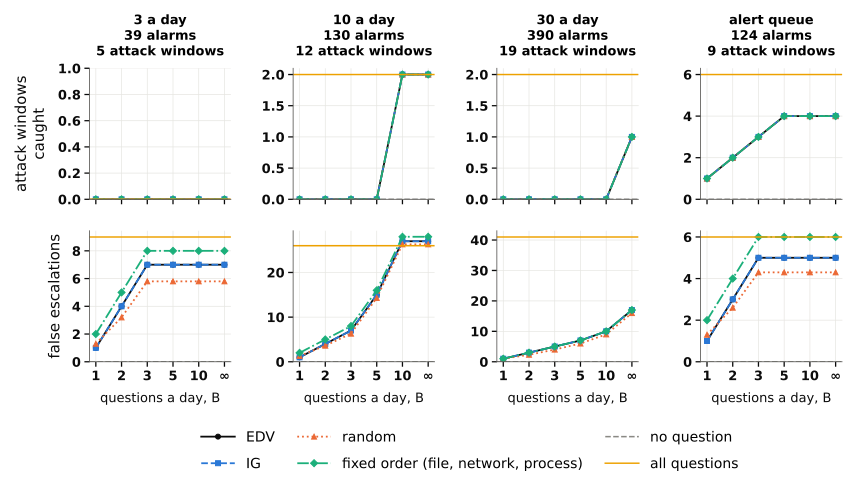


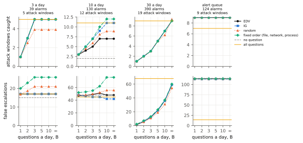


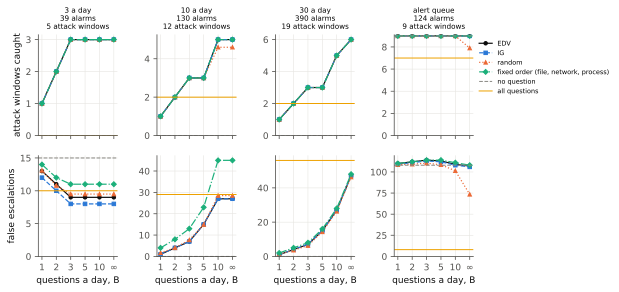


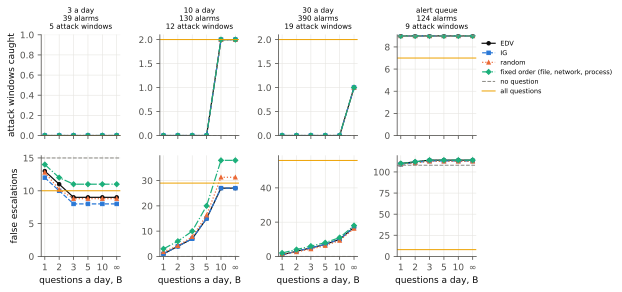


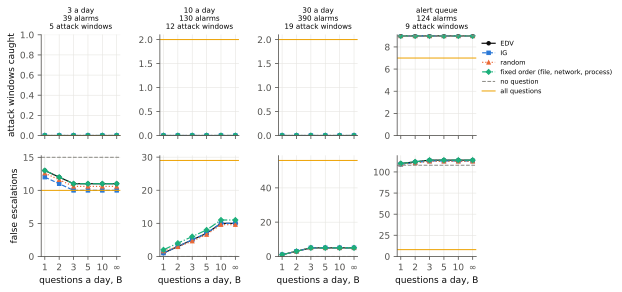


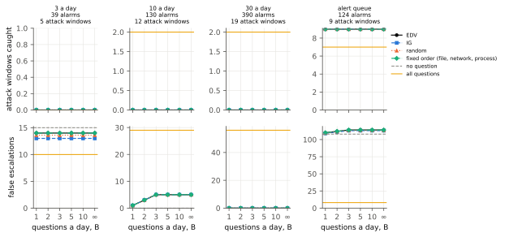

S6.4 What a question is worth
Labelled outcomes turn into the value per question \(v\) of (13) (§ 4.7): how much decision loss a question saved, measured, like the price \(c\), in false escalations. Where \(v \ge 0\), it is the break even price of the questions asked, which a designer can compare directly with the price of an evidence fetcher (Table 2) or convert into analyst minutes. The values of this section are those of the proxy questions of the worked example, whose model fails its own check (§ 5.3); they show how the measure reads, not what costly evidence would be worth (§ 5.4).
Figure S12 plots \(v\) against the price, at \(r = 10\). Each panel shows one criterion, and each line one alarm queue. A point above the dotted line means that, in that queue and at that price, the questions the criterion asks save more loss in total than they cost.

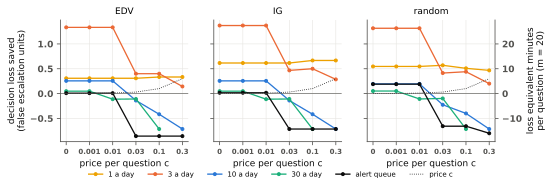

Value on the alarm queues. At prices up to 0.01, depending on the criterion, a question saved 1.3 to 1.4 false escalations in the queue of three a day, 0.19 to 0.26 in the queue of ten a day, 0.31 to 0.62 in the queue of one a day and 0.0081 to 0.19 among the alerts. In the queue of thirty a day it saved about 0.05 at a price of 0.001, but already lost 0.11 at 0.01. As the price rises, only the questions with the largest expected decision value stay admissible, and on the larger queues these questions increase the decision loss. In the queue of ten a day the value falls to −0.14 at a price of 0.03, −0.42 at 0.1 and −0.71 at 0.3; among the alerts it falls to −0.86 under expected decision value from a price of 0.03.
Over the whole realistic region, a question was worth between a loss of 0.86 (\(r = 10\)) and a saving of 3.5 (\(r = 20\)) false escalations. In each queue, 12 to 14 combinations of cost ratio and price had admissible questions, and the net value was positive in 4 to 11 of them. The three criteria agreed on the sign of the net value in 65 of these 66 combinations: in this replay, whether a question saves more than it costs depends mainly on the queue and the price, since every criterion questions the same alarms and the criteria choose different questions on few of them (§ 5.2).
Figures S13 and S14 repeat Figure S12 at the other two cost ratios of the realistic region. Each shows the realised average decision loss saved per question, in false escalation units, against the assumed price \(c\), with no shared budget, for expected decision value (EDV), information gain (IG) and random choice. Solid lines: alarm queues; dashed: all test windows under the same filter. Dotted line: the price itself; above it, the questions selected at that price save more loss than they cost in total. Right axis: the same decision loss in equivalent minutes, at 20 minutes per false escalation. A point is missing where no question is admissible.

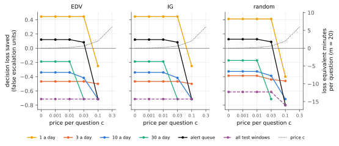


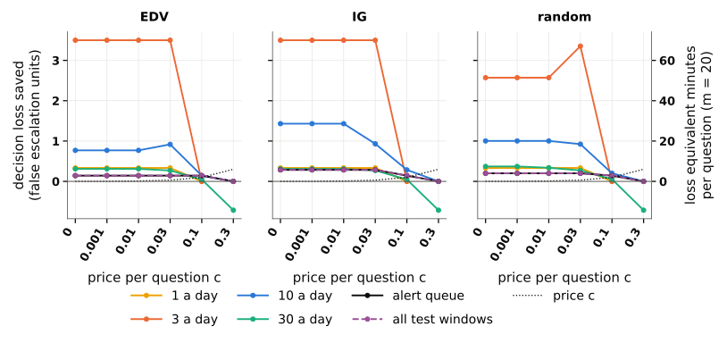

How certain these values are. Each value of \(v\) rests on few events, so another set of recorded days could have given a very different value. A bootstrap interval measures how different. The replay runs once, and its decision losses and questions are summed per collection day: 13 days for each daily queue, 7 for the alert queue. A resampled data set draws as many days as were recorded, at random and with replacement, so that some days count twice and others not at all; \(v\) is then recomputed on it. Whole days are drawn, not single windows, because the windows of one attack fall on the same day. The central 95 percent of the values of \(v\) over 2,000 resampled data sets form the interval. An interval entirely above zero means that the questions saved loss even in unfavourable resamples; an interval that contains zero means that the data cannot tell whether the questions saved loss or added it. For example, the saving of 3.5 per question, in the queue of three a day at \(r = 20\) and \(c = 0.001\), comes entirely from two collection days of DARPA TC, CADETS and THEIA, both on 12 April 2018: on these days, 6 of the 28 questions catch the 5 attack windows of the queue, which belong to 2 attacks. Resampled data sets without these two days give a value near zero, and those that draw them several times give up to 8.6: the interval runs from −0.071 to 8.6, so the saving may well be zero. The loss of 0.86, among the alerts at \(r = 10\) and \(c = 0.03\), rests on 7 questions, all on benign alerts, 6 of which end in a false escalation; its interval, from −1 to −0.67, lies entirely below zero. At \(r = 10\) and \(c = 0.01\), the intervals lie above zero in the queues of one and three alarms a day, for example from 0.077 to 0.54 for expected decision value in the queue of one a day, and contain zero in the other queues. Over the 198 combinations of realistic queue, cost ratio, price and criterion with questions, 161 intervals contain zero, 24 lie entirely above it and 13 entirely below it: in most combinations, the data cannot tell whether a question saved loss or added it.
Table S10 gives the values of Figure S12 at prices of 0.01 and 0.03, with their bootstrap intervals and the model intervals of § 5.3.
| Queue | Criterion | Questions, c = 0.01 | Value [bootstrap 95%] | Model 95% interval | Questions, c = 0.03 | Value [bootstrap 95%] | Model 95% interval |
|---|---|---|---|---|---|---|---|
| 1 a day | EDV | 13 | 0.31 [0.077, 0.54] | [-1.1, 0.85] | 13 | 0.31 [0.077, 0.54] | [-1.1, 0.85] |
| IG | 13 | 0.62 [0.38, 0.85] | [-1.5, 0.92] | 13 | 0.62 [0.31, 0.85] | [-1.5, 0.92] | |
| random | 13 | 0.55 [0.35, 0.74] | [-1.3, 0.86] | 13 | 0.57 [0.38, 0.76] | [-1.3, 0.88] | |
| 3 a day | EDV | 27 | 1.3 [0.074, 3.7] | [-0.56, 0.7] * | 15 | 0.4 [0, 0.83] | [-0.93, 0.73] |
| IG | 27 | 1.4 [0.067, 3.9] | [-0.56, 0.7] * | 15 | 0.47 [0, 1] | [-0.93, 0.8] | |
| random | 27 | 1.3 [0.073, 3.7] | [-0.52, 0.6] * | 15 | 0.41 [0, 0.75] | [-1, 0.69] | |
| 10 a day | EDV | 90 | 0.26 [-0.36, 1.1] | [-0.078, 0.41] | 50 | -0.14 [-0.72, 0.65] | [-0.08, 0.6] * |
| IG | 90 | 0.26 [-0.36, 1.1] | [-0.078, 0.41] | 50 | -0.14 [-0.72, 0.68] | [-0.08, 0.6] * | |
| random | 90 | 0.19 [-0.39, 1] | [-0.11, 0.31] | 50 | -0.23 [-0.73, 0.61] | [-0.14, 0.58] * | |
| 30 a day | EDV | 150 | -0.11 [-0.42, 0.27] | [-0.053, 0.24] * | 64 | -0.11 [-0.86, 0.26] | [-0.078, 0.45] * |
| IG | 150 | -0.11 [-0.42, 0.29] | [-0.053, 0.24] * | 64 | -0.11 [-1, 0.26] | [-0.078, 0.45] * | |
| random | 150 | -0.11 [-0.42, 0.3] | [-0.057, 0.24] * | 64 | -0.098 [-0.93, 0.27] | [-0.073, 0.45] * | |
| alert queue | EDV | 124 | 0.0081 [-0.37, 0.16] | [-0.4, 0.43] | 7 | -0.86 [-1, -0.67] | [-0.43, 2.9] * |
| IG | 124 | 0.016 [-0.29, 0.2] | [-0.4, 0.41] | 7 | -0.71 [-1, 0] | [-0.14, 2.9] * | |
| random | 124 | 0.19 [-0.24, 0.3] | [-0.26, 0.3] | 7 | -0.66 [-1, -0.3] | [-0.31, 2.1] * |
Questions: questions asked. Value: realised average decision loss saved per question, in false escalation units, with the 95 percent bootstrap interval from 2,000 resamples of the days of each collection together with their alarms. Model 95% interval: the interval within which the model expects 95 percent of realised values, from 2,000 draws of labels and answers under the model; *: the realised value lies outside it. Values rounded to two significant figures.
Where the value comes from. A question saves decision loss by catching attack windows and adds loss through false escalations. In the queue of ten a day at \(r = 10\) and \(c = 0.01\), the 90 questions of expected decision value catch 5 attack windows and add 27 false escalations. The catches are worth 50 and the false escalations cost 27: a net saving of 23 over 90 questions, or 0.26 each. At 20 minutes per false escalation, the 27 false escalations cost 540 minutes of analyst attention, 6 minutes per question; the saving lies in attack windows caught, not in analyst time. Attacks can also be counted whole: an attack is caught when at least one of its windows is escalated. In the queues of three, ten and thirty a day, asking nothing catches no attack. With questions, 1 of the 2 attacks is caught in the queue of three a day, 2 of the 3 in the queue of ten a day, and 2 of the 6 in the queue of thirty a day. Asking nothing already catches the only attack of the queue of one a day and all 3 attacks among the alerts (Table S11).
At 10 to 40 minutes per false escalation, the realistic values range from 8.6 to 34 minutes lost to 35 to 140 minutes saved per question. As the example shows, these are minutes of loss, which mix analyst time with missed attack windows weighted by \(r\). For comparison, a question at a price of 0.01 costs the equivalent of 12 seconds of analyst attention at 20 minutes per false escalation.
How robust the values are. Two other reasonable estimates of the starts, and weaker smoothing, change the sign of the value in 35 of 198 to 46 of 174 realistic combinations with questions, mostly where the value lies close to zero (§ S4, Table S3). The values of this section are therefore not robust to choices that a careful analyst could make differently.
Starts below the realised share. In the DARPA TC queues of three and ten alarms a day, the start is far lower than the share of attack windows actually found in the queue (Table S1): the start lies below the threshold, the realised share above it. With the starts used, every alarm of these queues is dismissed unless an answer raises it above the threshold. With starts equal to the realised shares, every alarm would be escalated with no question at all. In these queues, the questions thus mostly lift alarms over a threshold that a correct start would already exceed. Part of the value measured there, which includes the largest of this section, therefore comes from correcting a start that is too low, not from information about each alarm.
Most alerts come from ClearScope E3. ClearScope E3 contributes 102 of the 124 alerts. The large differences among the alerts, such as 107 under expected decision value against 84.5 under random choice, come from it: without it, every policy reaches a decision loss between 7.5 and 9 (§ S4).
Fixed orders. In two queues, some fixed orders do much better than the criteria based on the model (Table S9, at \(r = 10\) and \(c = 0.01\)). Among the alerts, the two orders that ask the network question first reach a loss of 27, against 107 for expected decision value and 108 without questions. In the queue of one a day, the orders that start with the network or the process question reach 2 to 4, against 8. These differences rest on few events and are not a ranking; § 5.3 reads them as a sign that the model is miscalibrated.
All test windows. Asked on every test window without the filter, information gain and random choice ask 133,307 questions at \(r = 10\) and raise the decision loss from 3,010 to about 3,015: about \(-0.00004\) false escalations per question. Expected decision value asks only where some answer can change the decision, so even without the filter it asks only the 7 alerts that the filter keeps (§ A.6). With the filter, these 7 alerts are the only questions on all test windows, and they lose 0.86 per question under expected decision value, 0.71 under information gain and 0.66 under random choice: little in total, but the worst value per question of this study.
Table S11 splits the results at \(r = 10\) and \(c = 0.01\) by tested collection.
| Collection | Queue | Labelled | Attack windows | Attacks | No question: caught / false | EDV: questions | EDV: caught / false | EDV: value per question | Attacks reached: none / EDV |
|---|---|---|---|---|---|---|---|---|---|
| CADETS E3 | 1 a day | 4 | 0 | 0 | 0 / 4 | 4 | 0 / 2 | 0.5 | 0 / 0 |
| CADETS E3 | 3 a day | 12 | 2 | 1 | 0 / 0 | 0 | 0 / 0 | n/a | 0 / 0 |
| CADETS E3 | 10 a day | 40 | 6 | 1 | 0 / 0 | 0 | 0 / 0 | n/a | 0 / 0 |
| CADETS E3 | 30 a day | 120 | 7 | 1 | 0 / 0 | 0 | 0 / 0 | n/a | 0 / 0 |
| CADETS E3 | alert queue | 4 | 3 | 1 | 3 / 1 | 4 | 3 / 1 | 0 | 1 / 1 |
| ClearScope E3 | 1 a day | 2 | 0 | 0 | 0 / 2 | 2 | 0 / 2 | 0 | 0 / 0 |
| ClearScope E3 | 3 a day | 6 | 0 | 0 | 0 / 0 | 6 | 0 / 0 | 0 | 0 / 0 |
| ClearScope E3 | 10 a day | 20 | 0 | 0 | 0 / 0 | 20 | 0 / 0 | 0 | 0 / 0 |
| ClearScope E3 | 30 a day | 60 | 1 | 1 | 0 / 0 | 0 | 0 / 0 | n/a | 0 / 0 |
| ClearScope E3 | alert queue | 102 | 2 | 1 | 2 / 100 | 102 | 2 / 98 | 0.02 | 1 / 1 |
| THEIA E3 | 1 a day | 2 | 1 | 1 | 1 / 1 | 2 | 1 / 1 | 0 | 1 / 1 |
| THEIA E3 | 3 a day | 6 | 3 | 1 | 0 / 0 | 6 | 3 / 0 | 5 | 0 / 1 |
| THEIA E3 | 10 a day | 20 | 4 | 1 | 0 / 0 | 20 | 3 / 0 | 1.5 | 0 / 1 |
| THEIA E3 | 30 a day | 60 | 4 | 1 | 0 / 0 | 0 | 0 / 0 | n/a | 0 / 0 |
| THEIA E3 | alert queue | 11 | 4 | 1 | 4 / 7 | 11 | 4 / 2 | 0.45 | 1 / 1 |
| OpTC h051 | 1 a day | 3 | 0 | 0 | 0 / 3 | 3 | 0 / 3 | 0 | 0 / 0 |
| OpTC h051 | 3 a day | 9 | 0 | 0 | 0 / 9 | 9 | 0 / 7 | 0.22 | 0 / 0 |
| OpTC h051 | 10 a day | 30 | 2 | 1 | 0 / 0 | 30 | 2 / 20 | 0 | 0 / 1 |
| OpTC h051 | 30 a day | 90 | 4 | 1 | 0 / 0 | 90 | 2 / 33 | -0.14 | 0 / 1 |
| OpTC h051 | alert queue | 4 | 0 | 0 | 0 / 0 | 4 | 0 / 4 | -1 | 0 / 0 |
| ATLASv2 | 1 a day | 2 | 0 | 0 | 0 / 2 | 2 | 0 / 0 | 1 | 0 / 0 |
| ATLASv2 | 3 a day | 6 | 0 | 0 | 0 / 6 | 6 | 0 / 2 | 0.67 | 0 / 0 |
| ATLASv2 | 10 a day | 20 | 0 | 0 | 0 / 0 | 20 | 0 / 7 | -0.35 | 0 / 0 |
| ATLASv2 | 30 a day | 60 | 3 | 2 | 0 / 0 | 60 | 1 / 14 | -0.067 | 0 / 1 |
| ATLASv2 | alert queue | 3 | 0 | 0 | 0 / 0 | 3 | 0 / 2 | -0.67 | 0 / 0 |
Asking no question against expected decision value. Labelled: labelled alarms. Attacks: distinct annotated attacks present. Caught / false: attack windows escalated and false escalations. Value per question: \((D_{\text{none}} - D)/Q\), n/a where no question is asked. Attacks reached: distinct attacks with at least one window escalated, without questions and under expected decision value.
References
Works cited on this page, numbered as in the paper.
- Li, Zhenyuan, Zhengkai Wang, Ling Jiang, Xiangmin Shen, Ruixiao Lin, Sen Nie, et al. 2026. “SherAgent: Scaling Attack Investigation in the Wild via LLM-Empowered Iterative Query-Filter Backtracking.” arXiv preprint arXiv:2607.09176. https://arxiv.org/abs/2607.09176.
- Dong, Feng, Shaofei Li, Peng Jiang, Ding Li, Haoyu Wang, Liangyi Huang, Xusheng Xiao, et al. 2023. “Are we there yet? An Industrial Viewpoint on Provenance-based Endpoint Detection and Response Tools.” In ACM CCS, 2396–2410. https://doi.org/10.1145/3576915.3616580.
- Yang, Limin, Zhi Chen, Chenkai Wang, Zhenning Zhang, Sushruth Booma, Phuong Cao, Constantin Adam, et al. 2024. “True Attacks, Attack Attempts, or Benign Triggers? An Empirical Measurement of Network Alerts in a Security Operations Center.” In 33rd USENIX Security Symposium, 1525–42. https://www.usenix.org/conference/usenixsecurity24/presentation/yang-limin.
- Kersten, Leon, Tom Mulders, Emmanuele Zambon, Chris Snijders, and Luca Allodi. 2023. “‘Give Me Structure’: Synthesis and Evaluation of a (Network) Threat Analysis Process Supporting Tier 1 Investigations in a Security Operation Center.” In Nineteenth Symposium on Usable Privacy and Security (SOUPS 2023), 97–111. https://www.usenix.org/conference/soups2023/presentation/kersten.
- Chowdhury, Israt Jahan, and Md Abu Yousuf Tanvir. 2026. “Decision-Aware Trust Signal Alignment for SOC Alert Triage.” arXiv preprint arXiv:2601.04486. https://arxiv.org/abs/2601.04486.